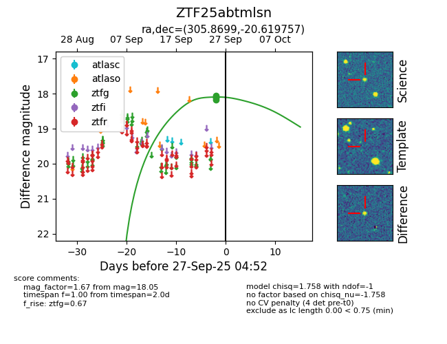
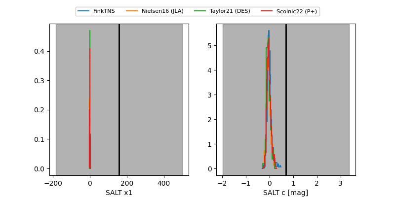

FINK: ZTF25abtmlsn
Lasair: ZTF25abtmlsn
ALeRCE: ZTF25abtmlsn
ZTF25abtmlsn (ztf,fink)
equatorial (ra, dec) = (305.8699,-20.61976)
galactic (l, b) = (23.2744,-29.09047)


last ztfg=18.05
4 ztfg detections